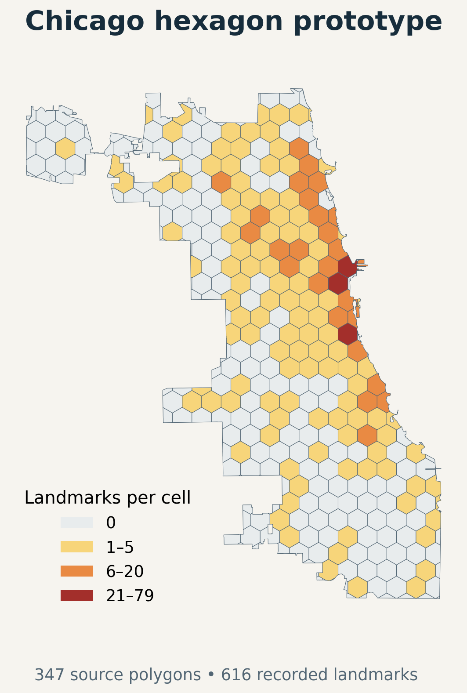
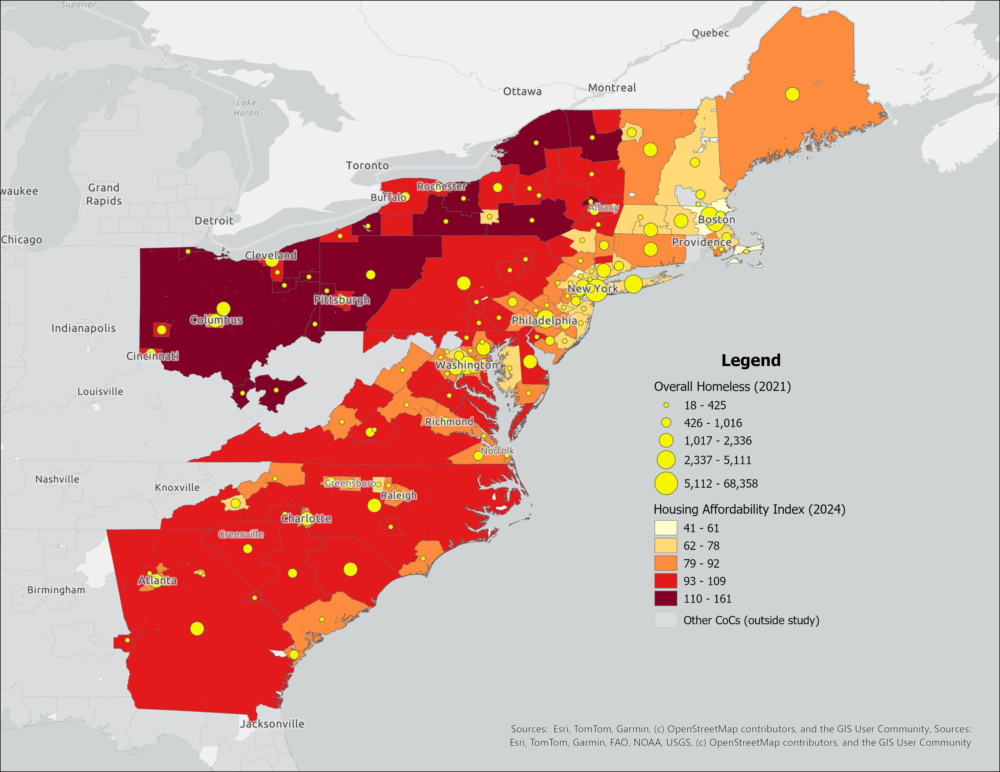
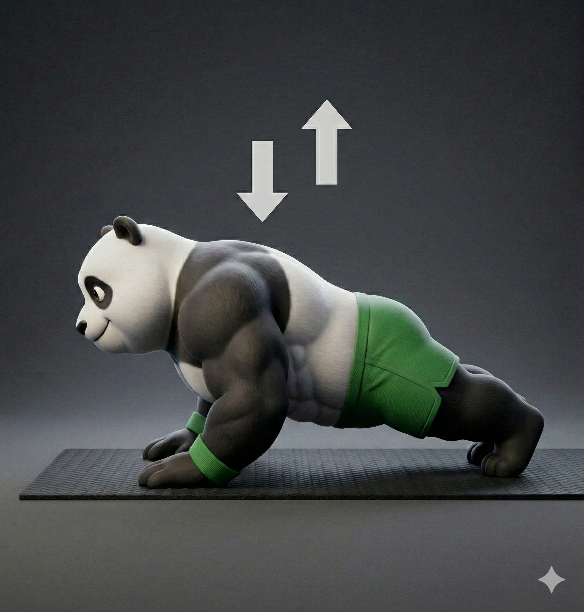

Skip to content
vinay.
About
Portfolio
Experience
Contact
Portfolio.
SELECT A PROJECT TO EXPLORE
All work
05
Applied AI
Research
AI internship
Medical retrieval
& agent workflows
Medical question
01
Retrieve
LlamaIndex + Weaviate
02
Rerank
Cross-encoder
03
Respond
Relevant context
LangGraph workflows
Medical Q&A · Reports · Drug information
Medical RAG & AI Agents
View project
+
Quark Lab · Machine learning
Gun violence.
ML research.

Gun-Violence Research
View project
+
Quark Lab · Research
Homelessness
Prediction.

Homelessness Prediction
View project
+
Quark Lab · Ongoing research
Twitter signals for
gun-violence research.
Geolocated tweets
Match by location & date
→
LLM + RoBERTa
Emotion labels
Summaries
Structured features
→
Gun-violence models
Twitter Analysis
View project
+

Personal project · In development
FitPanda
Exercise. Earn screen time.
FitPanda
View project
+
Close ×
Close
×